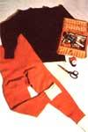
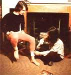
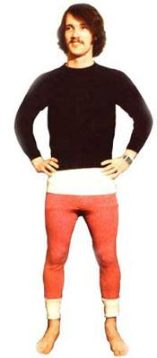
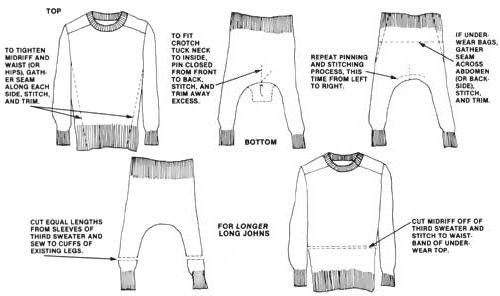

Don't throw away those raggy, baggy sweaters! Instead, take a tip from Mary Schantz and transform 'em into custom-tailored winter "woollies."
There's nothing like a pair of old-fashioned woolen long Johns to take the bite out of a cold winter day. A layer of wool next to the skin is, even when wet, about the best insulation imaginable. And, since this material has fibers that lift moisture away from the body, a good pair of "woollies" provides ventilation as well as insulation.
In fact, the only problem with yesterday's answer to the cold is today's inflated economy. It's nearly impossible to find a pair of woolen long Johns for under $25, and even the blended cotton or synthetic imitations (which are often anything but warm when they get damp) aren't cheap.
So, how can you afford to stay cozy and dry while you work or play in the snow? It's easy, just make your own set of woolen underwear! Even the most inexperienced seamster or seamstress can custom-tailor a couple of old sweaters into warm winter undies in an hour or so, and the necessary materials shouldn't cost more than a few of dollars, if anything at all! Here's how:
First, you'll have to locate two or three old woolen sweaters, one for the top portion of your long Johns, one for the bottom and a third that can be cut up to extend the arms and/or midriff of the other two.
If you don't have any ready-to-be-discarded sweaters around the house, you should be able to find a few in a quick search of a secondhand clothing store or "tag" sale. (You can expect to pay a couple of dollars per sweater, if the prices are higher than that, keep on looking!)
Don't let the appearance of your bargains discourage you. Remember, you want to make underwear, so a few moth holes - unless they're big enough to let in the breeze - won't be a problem.
You might, however, be a little bit fussy about the kind of wool used in your "raw materials." Machine-washable woolen sweaters have an obvious advantage, and - if your skin is sensitive - a soft wool helps you avoid that "hair shirt" feeling.
The undershirt portion of your woollies will require little (if any) work. Simply select the snuggest-fitting (but still comfortable!) sweater and, if it's too loose to fit comfortably under your clothes, turn the sweater inside out, gather the "extra" material, seam it off on both sides, and then clip away the excess.
Pick a sweater with long, baggy arms to serve as the "legs" of your long Johns. Then put it on (feet first, of course) and you're ready to tailor the long John "bottoms" to fit your own.
Begin by tucking in the sweater neck to take up the excess material in the crotch area and pin the neck closed, from front to back. Then, remove the garment, run a crotch seam along the pinned line, and trim away the extra "seamed" material from the inside.
When the first seam is in and trimmed, repeat the gathering and pinning process, but this time run your crotch seam from right to left and trim away the excess.
If the underwear bags between the waist and crotch, just fold it in, stitch a yoke seam from right to left across the abdomen, and - again - trim it from the inside. You can repeat this procedure on the backside, if necessary, but be sure to leave a little sittin' room
Finally, should you need to tighten the hips and waist, you can run a seam up each side (or one down the middle) and repeat the trimming process.
The sweater-arm "legs" of these long Johns may not be long enough for taller folks. To extend them, just cut off as much length as you need from the sleeves of the third sweater and sew these pieces to the cuffs of the existing legs.
And, if the undershirt won't stay tucked in when you bend or stretch, simply cut the midriff off of the third sweater and stitch it to the waistband of your underwear top.
That's all there is to it. You've got yourself some inexpensive, super-warm long Johns to help ward off the winter winds. Of course, your homemade underwear might took a little funny, but you'll find it a lot easier to laugh when your teeth aren't chatterin'!
|
 MARK MUTO It doesn't take much to sew "woollies" of your own. All you need are scissors, thread, a needle and a few sweaters. |
MARK MUTO If you can thread a needle, you can sew your own long Johns, and it'll take just a few hours' time, whether done by hand or by machine. |
 MARK MUTO Custom-tailor your long underwear to fit loosely or snugly, and - with a few extra sweater sleeves - it's a simple process to make the legs as long as you like. |
|
 MARK MUTO Sure they look funny, but these long Johns are warm and the price is right. This set of homemade long underwear cost only $2.00 and took less than an hour and a half to make. |
 ROSEMARY HANKS |
MARK MUTO |